P2-2 photograph pendant masks and stencil registration
P2-2 mask contact sheet: 91 overlays
out: /Users/sanchay/hq/projects/devonel/jewelo/docs/goals/road-to-gold/dogfood-2026-09-08/phase2-mask
percentile rule: nearest rank, index = floor(fraction * (n - 1))
studio human passes: count=31 min=0.276 p05=0.290 median=0.336 max=0.450
on_skin human passes (reported, not claimed): none
close_up human passes (reported, not claimed): count=7 min=0.320 p05=0.320 median=0.366 max=0.410
dark human passes (reported, not claimed): count=8 min=0.191 p05=0.191 median=0.231 max=0.284
studio human passes by look - the stencil is the whole piece only for `classical`;
every other look adds a frame, a rail or a ribbon that no stencil in this corpus carries:
classical: count=10 min=0.330 p05=0.330 median=0.342 max=0.400
diamond-rails: count=6 min=0.296 p05=0.296 median=0.323 max=0.398
framed-minimal: count=13 min=0.276 p05=0.276 median=0.318 max=0.450
origami-ribbon: count=2 min=0.383 p05=0.383 median=0.383 max=0.394
defect rows by tag (studio only):
cgi-look: count=2 min=0.400 p05=0.400 median=0.400 max=0.410
chain-not-through-ring: count=5 min=0.383 p05=0.383 median=0.390 max=0.403
disconnected-component: count=2 min=0.367 p05=0.367 median=0.367 max=0.427
extra-ring: count=3 min=0.329 p05=0.329 median=0.358 max=0.383
floating-mark: count=1 min=0.427 p05=0.427 median=0.427 max=0.427
floating-stone: count=1 min=0.399 p05=0.399 median=0.399 max=0.399
missing-glyph: count=1 min=0.409 p05=0.409 median=0.409 max=0.409
missing-ring: count=1 min=0.390 p05=0.390 median=0.390 max=0.390
unsupported-geometry: count=2 min=0.273 p05=0.273 median=0.273 max=0.389
wrong-display: count=2 min=0.303 p05=0.303 median=0.303 max=0.310
wrong-look: count=4 min=0.362 p05=0.362 median=0.397 max=0.415
wrong-stones: count=4 min=0.310 p05=0.310 median=0.328 max=0.356
studio geometry-defect rows (the five tags a gate owns): count=7 min=0.329 p05=0.329 median=0.383 max=0.427
studio pass p05 = 0.290; highest geometry-defect IoU = 0.427
P2-3 threshold candidate (p05 rounded down to two decimals) = 0.28
separation: NOT achieved - at least one geometry-defect row scores at or above the pass p05
registration failures: 9 of 91
classical-en-on-skin-a1 (on_skin, pass): photo mask empty
classical-ar-on-skin-a1 (on_skin, pass): photo mask empty
origami-ribbon-en-on-skin-a1 (on_skin, pass): photo mask empty
origami-ribbon-ar-on-skin-a1 (on_skin, pass): photo mask empty
origami-ribbon-ar-close-up-a1 (close_up, pass): photo mask empty
framed-minimal-en-on-skin-a1 (on_skin, pass): photo mask empty
framed-minimal-ar-on-skin-a1 (on_skin, pass): photo mask empty
diamond-rails-en-on-skin-a1 (on_skin, pass): photo mask empty
diamond-rails-ar-on-skin-a1 (on_skin, pass): photo mask empty
five lowest studio passes:
framed-minimal-layla-ar-a1: IoU 0.276 registered cover 19.8% parts 1 stroke 14 close 4
framed-minimal-noor-ar-a2: IoU 0.290 registered cover 19.3% parts 1 stroke 11 close 4
diamond-rails-en-a2: IoU 0.296 registered cover 20.2% parts 1 stroke 2 close 1
framed-minimal-noor-en-a2: IoU 0.298 registered cover 21.8% parts 1 stroke 4 close 2
framed-minimal-en-a3: IoU 0.302 registered cover 19.1% parts 1 stroke 5 close 3
Cyan is the measured pendant mask. The magenta line is the outline of the
deterministic stencil after a similarity registration (uniform scale, in-plane rotation,
translation) initialised from image moments and refined by a bounded IoU search. A cell with a
red border is registration_failed: the transform left its configured bounds, which
is a different event from a low IoU and must not be read as one. The studio packshot group is
the only one the P2-3 threshold is taken from.
studio (66)
pass (31)
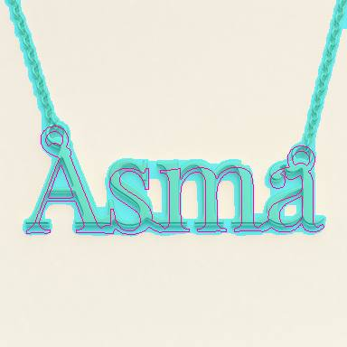
classical-en-a1 pass no tags IoU 0.400 registered scale 0.99 rot -0.5 deg cover 18.3% parts 1 stroke 15 close 4
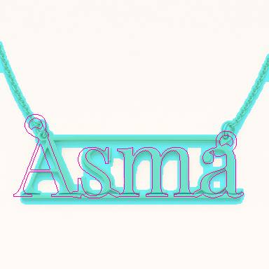
diamond-rails-en-a1 pass no tags IoU 0.339 registered scale 0.99 rot 0.0 deg cover 19.0% parts 1 stroke 15 close 4
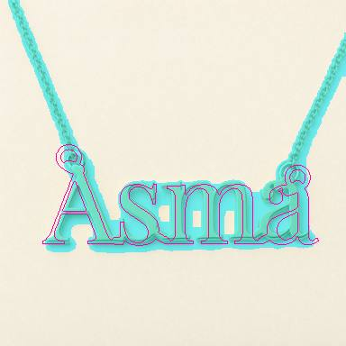
classical-en-a2 pass no tags IoU 0.342 registered scale 0.92 rot 0.0 deg cover 17.4% parts 1 stroke 15 close 4
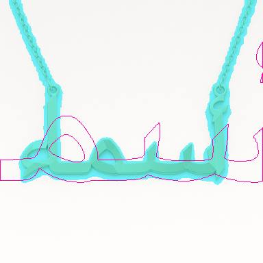
origami-ribbon-ar-a2 pass no tags IoU 0.383 registered scale 2.39 rot 0.0 deg cover 14.9% parts 1 stroke 16 close 4
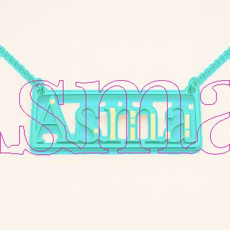
framed-minimal-en-a2 pass no tags IoU 0.328 registered scale 1.69 rot 0.0 deg cover 18.9% parts 1 stroke 5 close 3
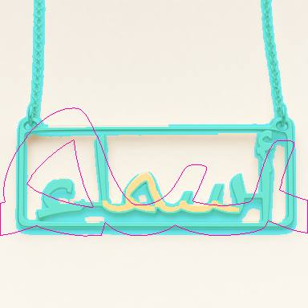
framed-minimal-ar-a2 pass no tags IoU 0.372 registered scale 2.62 rot -0.1 deg cover 19.6% parts 3 stroke 4 close 2
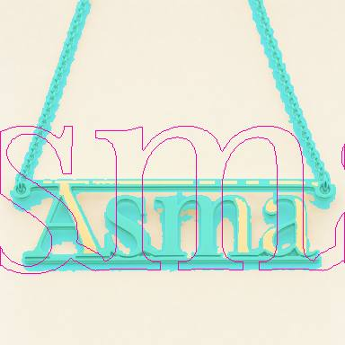
diamond-rails-en-a2 pass no tags IoU 0.296 registered scale 2.21 rot 0.0 deg cover 20.2% parts 1 stroke 2 close 1
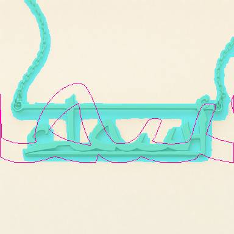
diamond-rails-ar-a2 pass no tags IoU 0.398 registered scale 2.15 rot 0.0 deg cover 21.0% parts 1 stroke 14 close 4
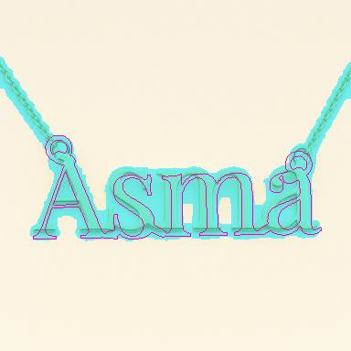
classical-en-a3 pass no tags IoU 0.392 registered scale 0.95 rot -1.3 deg cover 17.1% parts 1 stroke 12 close 4
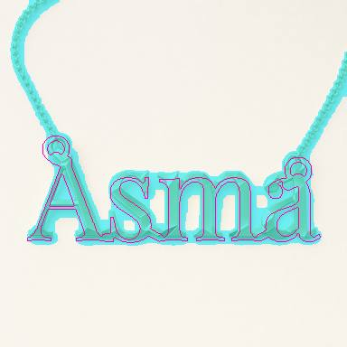
origami-ribbon-en-a3 pass no tags IoU 0.394 registered scale 0.97 rot 0.0 deg cover 18.0% parts 1 stroke 14 close 4
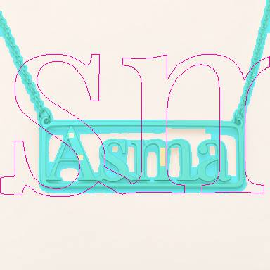
framed-minimal-en-a3 pass no tags IoU 0.302 registered scale 2.73 rot 0.0 deg cover 19.1% parts 1 stroke 5 close 3
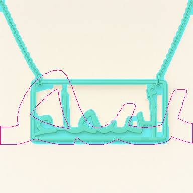
framed-minimal-ar-a3 pass no tags IoU 0.363 registered scale 2.44 rot 0.0 deg cover 17.1% parts 1 stroke 12 close 4
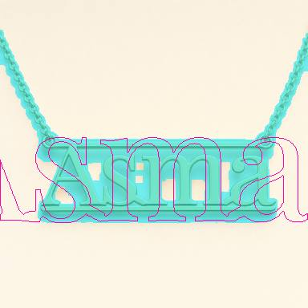
diamond-rails-en-a3 pass no tags IoU 0.333 registered scale 1.44 rot 0.0 deg cover 21.7% parts 1 stroke 15 close 4classical-ar-a4 pass no tags IoU 0.336 registered scale 1.19 rot 0.0 deg cover 14.9% parts 1 stroke 5 close 3
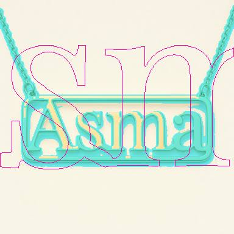
framed-minimal-en-a4 pass no tags IoU 0.316 registered scale 2.75 rot 0.0 deg cover 19.1% parts 1 stroke 2 close 1
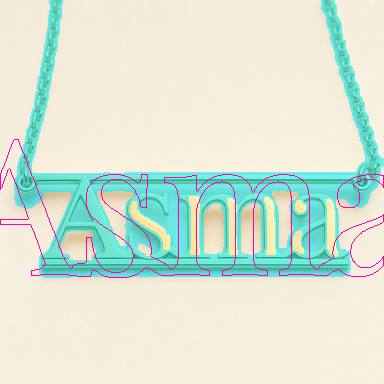
diamond-rails-en-a4 pass no tags IoU 0.323 registered scale 1.40 rot 0.0 deg cover 20.5% parts 1 stroke 4 close 2
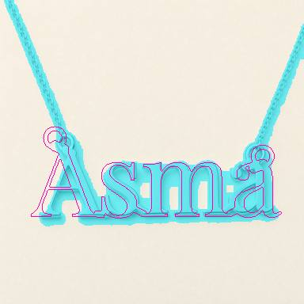
classical-en-white-a1 pass no tags IoU 0.340 registered scale 0.95 rot 0.0 deg cover 17.2% parts 1 stroke 7 close 4
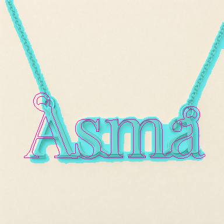
classical-en-rose-a1 pass no tags IoU 0.345 registered scale 0.93 rot 0.0 deg cover 17.0% parts 1 stroke 15 close 4
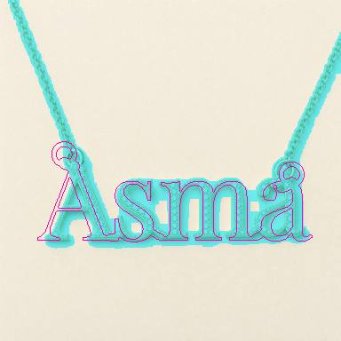
classical-en-full-pave-a1 pass no tags IoU 0.356 registered scale 0.93 rot 0.0 deg cover 16.4% parts 1 stroke 14 close 4
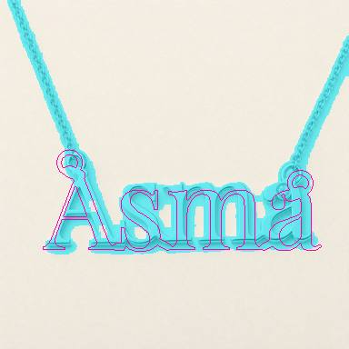
classical-en-white-accent-a1 pass no tags IoU 0.343 registered scale 0.92 rot 0.0 deg cover 16.6% parts 1 stroke 6 close 3
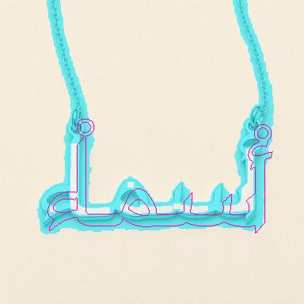
classical-ar-white-a1 pass no tags IoU 0.330 registered scale 1.19 rot 0.0 deg cover 15.1% parts 1 stroke 6 close 3classical-ar-rose-a1 pass no tags IoU 0.335 registered scale 1.19 rot 0.0 deg cover 15.0% parts 1 stroke 5 close 3
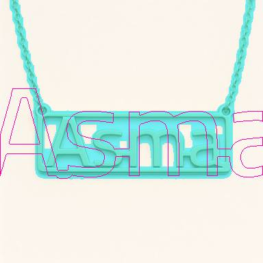
framed-minimal-en-kufi-a1 pass no tags IoU 0.320 registered scale 1.30 rot 0.0 deg cover 20.8% parts 1 stroke 12 close 4
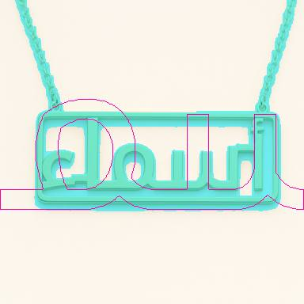
framed-minimal-ar-kufi-a1 pass no tags IoU 0.434 registered scale 2.14 rot 0.0 deg cover 21.7% parts 1 stroke 13 close 4
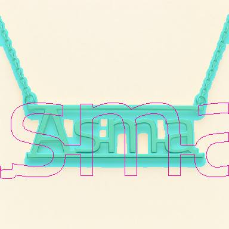
diamond-rails-en-kufi-a1 pass no tags IoU 0.322 registered scale 1.69 rot 0.0 deg cover 21.8% parts 1 stroke 16 close 4
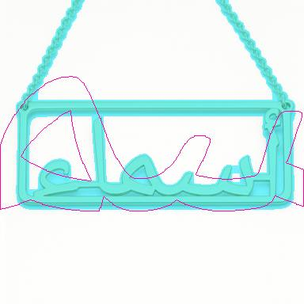
framed-minimal-ar-a5 pass no tags IoU 0.450 registered scale 2.80 rot 0.0 deg cover 22.2% parts 1 stroke 10 close 4
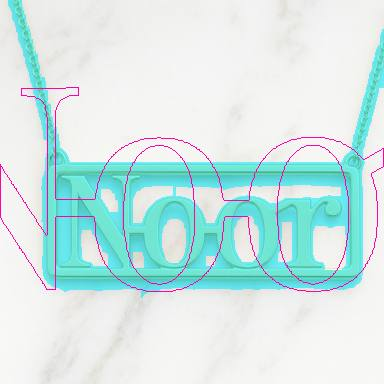
framed-minimal-noor-en-a1 pass no tags IoU 0.318 registered scale 1.84 rot -0.1 deg cover 24.9% parts 1 stroke 12 close 4
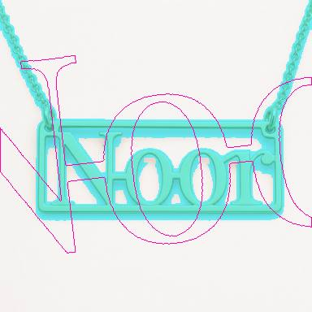
framed-minimal-noor-en-a2 pass no tags IoU 0.298 registered scale 2.19 rot -6.6 deg cover 21.8% parts 1 stroke 4 close 2
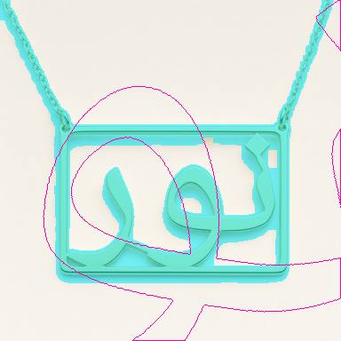
framed-minimal-noor-ar-a1 pass no tags IoU 0.317 registered scale 2.21 rot 7.9 deg cover 22.8% parts 1 stroke 12 close 4
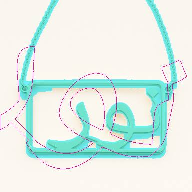
framed-minimal-noor-ar-a2 pass no tags IoU 0.290 registered scale 1.26 rot 23.3 deg cover 19.3% parts 1 stroke 11 close 4
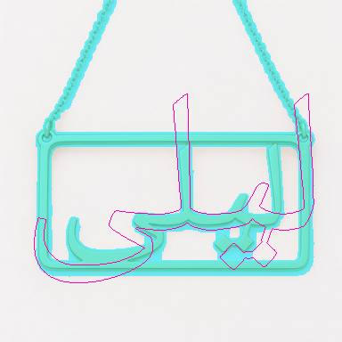
framed-minimal-layla-ar-a1 pass no tags IoU 0.276 registered scale 0.94 rot 0.0 deg cover 19.8% parts 1 stroke 14 close 4
tweak (11)
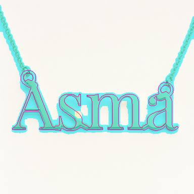
origami-ribbon-en-a1 tweak wrong-look IoU 0.415 registered scale 0.99 rot 0.0 deg cover 17.4% parts 1 stroke 13 close 4
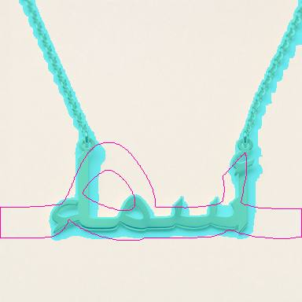
origami-ribbon-ar-a1 tweak wrong-look IoU 0.362 registered scale 3.07 rot 0.0 deg cover 15.3% parts 1 stroke 17 close 4
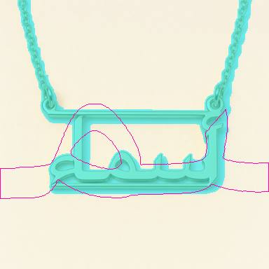
diamond-rails-ar-a1 tweak wrong-look IoU 0.397 registered scale 3.32 rot -1.6 deg cover 17.9% parts 1 stroke 9 close 4
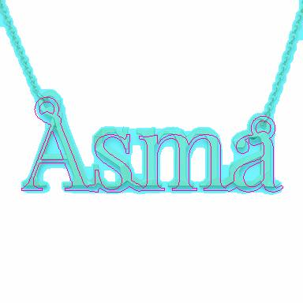
origami-ribbon-en-a2 tweak cgi-look IoU 0.410 registered scale 1.00 rot 0.0 deg cover 18.0% parts 1 stroke 14 close 4
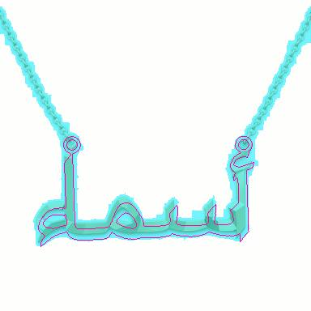
origami-ribbon-ar-a4 tweak cgi-look IoU 0.400 registered scale 1.13 rot -2.0 deg cover 13.2% parts 1 stroke 9 close 4
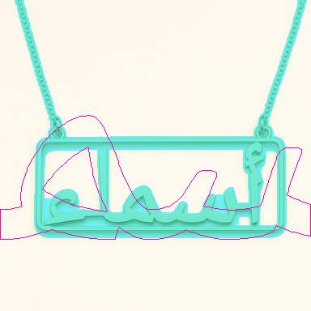
framed-minimal-ar-a4 tweak unsupported-geometry IoU 0.389 registered scale 2.51 rot 0.0 deg cover 18.1% parts 1 stroke 11 close 4
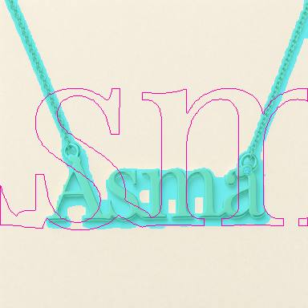
classical-en-accent-a1 tweak wrong-display IoU 0.303 registered scale 2.38 rot 0.0 deg cover 16.4% parts 1 stroke 15 close 4
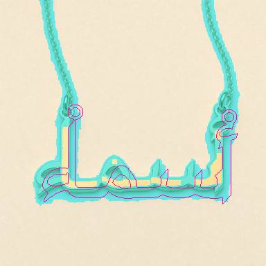
classical-ar-accent-a1 tweak wrong-stones IoU 0.328 registered scale 1.18 rot 0.0 deg cover 15.3% parts 1 stroke 5 close 3
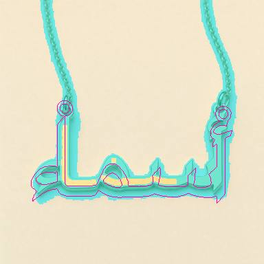
classical-ar-full-pave-a1 tweak wrong-stones IoU 0.356 registered scale 1.23 rot 0.1 deg cover 15.7% parts 1 stroke 5 close 3
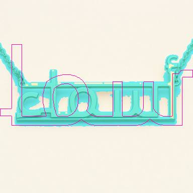
diamond-rails-ar-kufi-a1 tweak wrong-look IoU 0.407 registered scale 1.55 rot 0.0 deg cover 18.5% parts 1 stroke 2 close 1
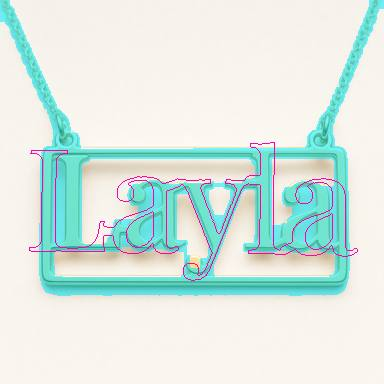
framed-minimal-layla-en-a1 tweak unsupported-geometry IoU 0.273 registered scale 0.99 rot 0.7 deg cover 21.5% parts 1 stroke 7 close 4
fail (13)
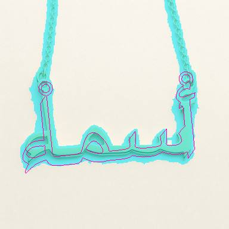
classical-ar-a1 fail chain-not-through-ring IoU 0.390 registered scale 1.25 rot -5.9 deg cover 16.6% parts 1 stroke 5 close 3
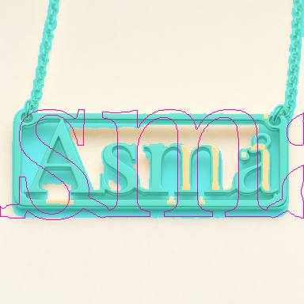
framed-minimal-en-a1 fail extra-ring IoU 0.358 registered scale 1.88 rot 0.0 deg cover 26.5% parts 1 stroke 4 close 2
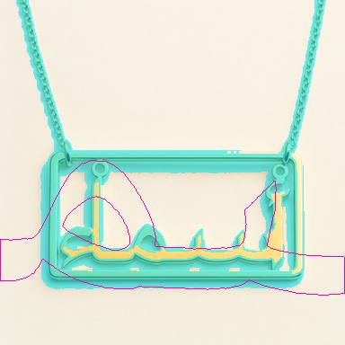
framed-minimal-ar-a1 fail extra-ring IoU 0.329 registered scale 3.48 rot 2.4 deg cover 19.6% parts 1 stroke 2 close 1
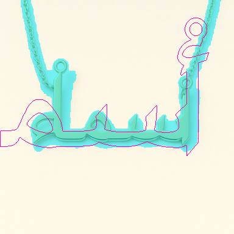
classical-ar-a2 fail chain-not-through-ring IoU 0.398 registered scale 1.95 rot 0.0 deg cover 15.8% parts 1 stroke 7 close 4
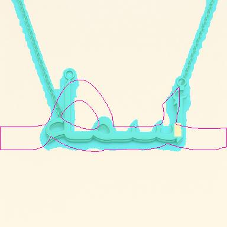
classical-ar-a3 fail chain-not-through-ring, extra-ring IoU 0.383 registered scale 2.97 rot 0.0 deg cover 14.3% parts 1 stroke 8 close 4
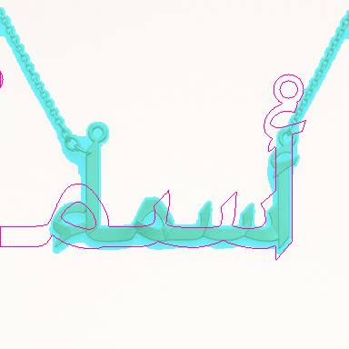
origami-ribbon-ar-a3 fail chain-not-through-ring IoU 0.403 registered scale 1.76 rot 0.0 deg cover 12.8% parts 1 stroke 13 close 4
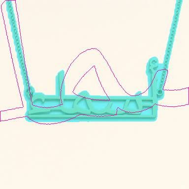
diamond-rails-ar-a3 fail missing-ring, chain-not-through-ring IoU 0.390 registered scale 2.31 rot -7.9 deg cover 15.4% parts 1 stroke 12 close 4
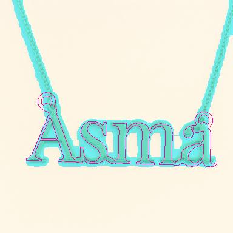
classical-en-a4 fail disconnected-component IoU 0.367 registered scale 0.94 rot 1.8 deg cover 17.1% parts 1 stroke 14 close 4
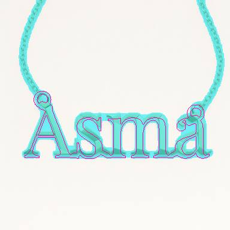
origami-ribbon-en-a4 fail disconnected-component, floating-mark IoU 0.427 registered scale 0.93 rot 0.0 deg cover 15.2% parts 1 stroke 11 close 4
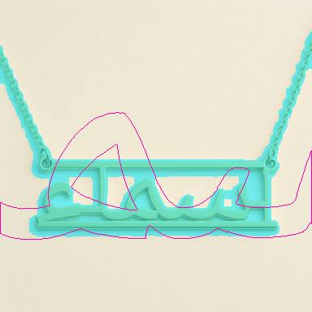
diamond-rails-ar-a4 fail missing-glyph IoU 0.409 registered scale 2.56 rot -0.4 deg cover 18.8% parts 1 stroke 14 close 4classical-en-partial-pave-a1 fail wrong-stones IoU 0.346 registered scale 0.93 rot 0.0 deg cover 17.1% parts 1 stroke 14 close 4classical-ar-partial-pave-a1 fail wrong-stones, wrong-display IoU 0.310 registered scale 3.03 rot 0.0 deg cover 14.9% parts 1 stroke 5 close 3classical-ar-white-accent-a1 fail floating-stone IoU 0.399 registered scale 3.21 rot 0.0 deg cover 16.7% parts 1 stroke 7 close 4
unscored (11)
framed-minimal-ar-a6 unscored no tags IoU 0.384 registered scale 2.69 rot 0.0 deg cover 20.6% parts 1 stroke 13 close 4framed-minimal-ar-a7 unscored no tags IoU 0.364 registered scale 2.60 rot 0.0 deg cover 19.1% parts 1 stroke 10 close 4framed-minimal-en-a7 unscored no tags IoU 0.331 registered scale 1.77 rot 0.0 deg cover 20.8% parts 1 stroke 12 close 4framed-minimal-layla-en-a2 unscored no tags IoU 0.307 registered scale 1.75 rot -0.4 deg cover 22.9% parts 1 stroke 13 close 4framed-minimal-layla-ar-a2 unscored no tags IoU 0.286 registered scale 1.25 rot 15.6 deg cover 19.5% parts 1 stroke 12 close 4framed-minimal-muhammad-en-a1 unscored no tags IoU 0.387 registered scale 2.68 rot 0.0 deg cover 19.1% parts 1 stroke 4 close 2framed-minimal-muhammad-en-a2 unscored no tags IoU 0.397 registered scale 1.98 rot 0.0 deg cover 16.6% parts 1 stroke 10 close 4framed-minimal-muhammad-ar-a1 unscored no tags IoU 0.402 registered scale 1.60 rot 0.0 deg cover 20.9% parts 1 stroke 16 close 4framed-minimal-muhammad-ar-a2 unscored no tags IoU 0.387 registered scale 1.47 rot 0.0 deg cover 17.5% parts 1 stroke 12 close 4framed-minimal-en-a5 unscored no tags IoU 0.320 registered scale 1.46 rot -2.2 deg cover 22.6% parts 1 stroke 13 close 4framed-minimal-en-a6 unscored no tags IoU 0.341 registered scale 2.84 rot 0.0 deg cover 20.7% parts 1 stroke 13 close 4
on_skin (8)
pass (8)
classical-en-on-skin-a1 pass no tags IoU 0.000 registration_failed scale 0.00 rot 0.0 deg cover 0.0% parts 0 stroke 1 close 1 photo mask emptyclassical-ar-on-skin-a1 pass no tags IoU 0.000 registration_failed scale 0.00 rot 0.0 deg cover 0.0% parts 0 stroke 1 close 1 photo mask emptyorigami-ribbon-en-on-skin-a1 pass no tags IoU 0.000 registration_failed scale 0.00 rot 0.0 deg cover 0.0% parts 0 stroke 1 close 1 photo mask emptyorigami-ribbon-ar-on-skin-a1 pass no tags IoU 0.000 registration_failed scale 0.00 rot 0.0 deg cover 0.0% parts 0 stroke 1 close 1 photo mask emptyframed-minimal-en-on-skin-a1 pass no tags IoU 0.000 registration_failed scale 0.00 rot 0.0 deg cover 0.0% parts 0 stroke 1 close 1 photo mask emptyframed-minimal-ar-on-skin-a1 pass no tags IoU 0.000 registration_failed scale 0.00 rot 0.0 deg cover 0.0% parts 0 stroke 1 close 1 photo mask emptydiamond-rails-en-on-skin-a1 pass no tags IoU 0.000 registration_failed scale 0.00 rot 0.0 deg cover 0.0% parts 0 stroke 1 close 1 photo mask emptydiamond-rails-ar-on-skin-a1 pass no tags IoU 0.000 registration_failed scale 0.00 rot 0.0 deg cover 0.0% parts 0 stroke 1 close 1 photo mask empty
close_up (9)
pass (8)
classical-en-close-up-a1 pass no tags IoU 0.384 registered scale 1.08 rot 0.3 deg cover 22.2% parts 1 stroke 5 close 3classical-ar-close-up-a1 pass no tags IoU 0.382 registered scale 3.78 rot 0.1 deg cover 23.2% parts 2 stroke 6 close 3origami-ribbon-ar-close-up-a1 pass no tags IoU 0.000 registration_failed scale 0.00 rot 0.0 deg cover 0.0% parts 0 stroke 1 close 1 photo mask emptyframed-minimal-en-close-up-a1 pass no tags IoU 0.359 registered scale 2.58 rot 14.6 deg cover 27.5% parts 2 stroke 6 close 3framed-minimal-ar-close-up-a1 pass no tags IoU 0.329 registered scale 2.78 rot 0.0 deg cover 22.1% parts 2 stroke 5 close 3diamond-rails-en-close-up-a1 pass no tags IoU 0.366 registered scale 1.61 rot -6.2 deg cover 27.4% parts 2 stroke 2 close 1diamond-rails-ar-close-up-a1 pass no tags IoU 0.410 registered scale 2.24 rot 0.0 deg cover 23.0% parts 1 stroke 4 close 2origami-ribbon-en-close-up-a2 pass no tags IoU 0.320 registered scale 2.83 rot 0.1 deg cover 24.1% parts 1 stroke 10 close 4
tweak (1)
origami-ribbon-en-close-up-a1 tweak wrong-display IoU 0.374 registered scale 3.85 rot 1.2 deg cover 48.7% parts 1 stroke 2 close 1
dark (8)
pass (8)
classical-en-dark-a1 pass no tags IoU 0.283 registered scale 3.88 rot -0.1 deg cover 59.9% parts 9 stroke 1 close 1classical-ar-dark-a1 pass no tags IoU 0.191 registered scale 3.59 rot 0.0 deg cover 30.4% parts 10 stroke 2 close 1origami-ribbon-en-dark-a1 pass no tags IoU 0.224 registered scale 3.58 rot 0.0 deg cover 33.7% parts 4 stroke 2 close 1origami-ribbon-ar-dark-a1 pass no tags IoU 0.231 registered scale 3.84 rot 0.0 deg cover 28.0% parts 12 stroke 2 close 1framed-minimal-en-dark-a1 pass no tags IoU 0.261 registered scale 3.66 rot 0.1 deg cover 31.4% parts 7 stroke 2 close 1framed-minimal-ar-dark-a1 pass no tags IoU 0.284 registered scale 3.32 rot 0.0 deg cover 23.1% parts 21 stroke 2 close 1diamond-rails-en-dark-a1 pass no tags IoU 0.199 registered scale 3.92 rot -8.0 deg cover 35.9% parts 5 stroke 2 close 1diamond-rails-ar-dark-a1 pass no tags IoU 0.253 registered scale 3.95 rot -0.1 deg cover 63.6% parts 8 stroke 2 close 1